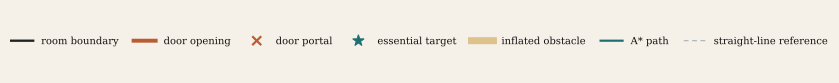
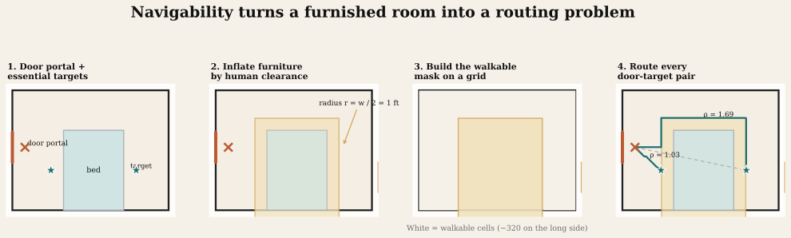
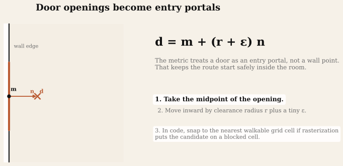
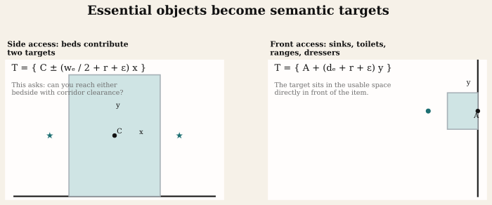
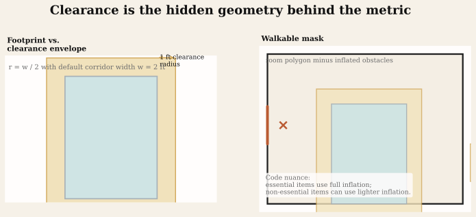
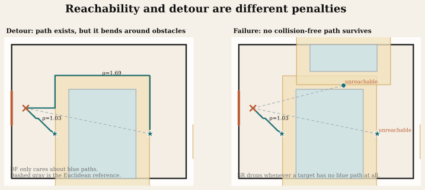
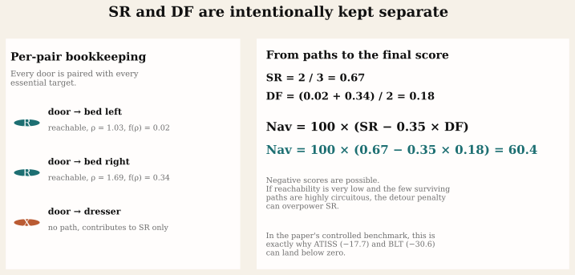
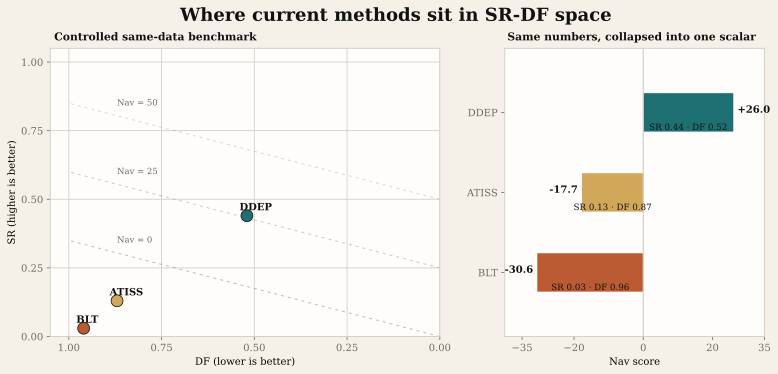
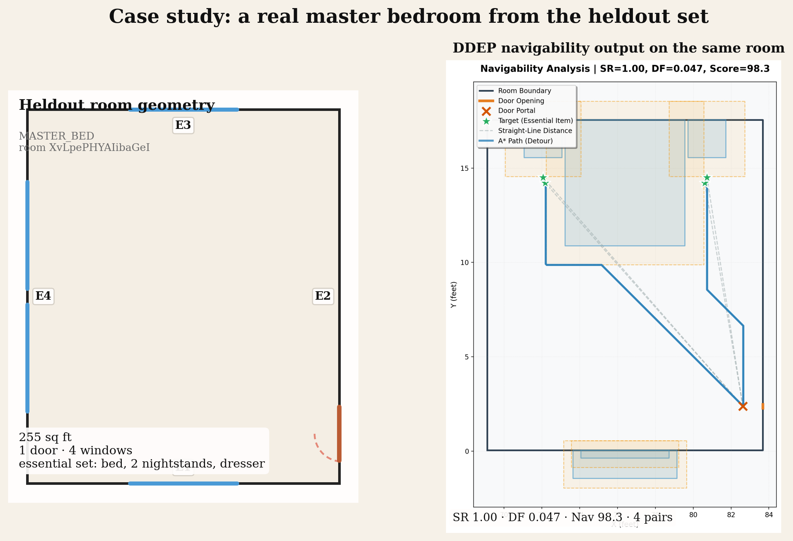

Navigability: how we score whether a generated room actually works
A layout can look plausible and still fail the most human test imaginable: can someone walk in from the door and reach the things that matter? Our navigability metric turns that question into geometry, pathfinding, and a score that exposes both access and inconvenience.
This explainer is based on the current paper text in the main submission and supplementary material, plus the metric implementation in the benchmark code. The code and supplement now agree on door portals: offset inward by r + ε, then snap to the nearest walkable grid cell if rasterization demands it.

The core idea
For every room r, the benchmark builds a set of door portals and a set of essential targets. It then evaluates every door-target pair. If a collision-free path exists, that pair is reachable. If the path exists but winds awkwardly around furniture, it is still reachable, but it pays a detour penalty.

Doors are not points on the wall
A door opening is first converted into a portal. That distinction matters. The benchmark now follows the supplementary definition directly: start at the midpoint of the opening, offset it into the room by r + ε, and then snap that candidate to the nearest walkable grid cell if rasterization places it on a blocked pixel.

Targets are semantic, not generic
This metric is not trying to measure whether you can reach any empty patch of floor. It asks whether you can reach the objects that make a room function. Those essentials come from the same inventory used for coverage. In bedrooms, beds are special: a bed contributes two side targets, because access to one side alone is not the same thing as having a usable bed layout. Other essentials, such as sinks, toilets, ranges, and dressers, contribute a front target.

Bedroom logic
In the current inventory, a BEDROOM requires a bed and at least one end table. A MASTER_BED also requires a dresser. The metric therefore cares about specific access patterns, not just total floor coverage.
Code nuance
The implementation also canonicalizes category names, uses fallback dimensions when predicted sizes are missing, and snaps targets to nearby walkable cells to avoid grid discretization artifacts.
Furniture “grows” before pathfinding starts
The benchmark does not route through raw furniture footprints. It routes through a clearance-aware version of the room. Every entity rectangle is inflated by a Minkowski sum with a disk of radius r = w / 2, where the default corridor width is 2.0 ft. In plain language: a couch is not just a couch, it is the couch plus the space a person needs around it.

There is an important implementation detail here. The paper presents a single clearance model, but the benchmark code softens some categories in practice: non-essential items can use lighter inflation, and tubs or showers may not inflate at all. That makes the metric less brittle while preserving the main functional question.
Reachability and detour are not the same thing
If a path exists, the pair contributes to SR. If that path is longer than the straight-line distance, it contributes to DF. Those are deliberately separate. A blocked layout should not be double-penalized as both unreachable and infinitely detoured. Conversely, a reachable layout should not get a free pass just because a path exists in principle.

How the score is assembled
Once every pair has been tested, the final score is almost brutally simple. SR is the fraction of successful door-target pairs. DF is the average detour penalty over the successful pairs only. The score is then a linear tradeoff between the two.

Interactive score calculator
The benchmark currently fixes λ at 0.35. Use the sliders or tap a preset to see how SR and DF combine into NavScore.
What the benchmark is saying right now
In the current controlled same-data benchmark draft, the reference numbers are not subtle. DDEP sits at SR = 0.44, DF = 0.52, and Nav = 26.0. ATISS lands at SR = 0.13, DF = 0.87, and Nav = −17.7. BLT drops further to SR = 0.03, DF = 0.96, and Nav = −30.6.
The scatter plot below is a useful way to read the metric. Good models live in the upper-left: high reachability and low detour. Negative scores happen when a method moves to the lower-right, where only a few paths survive and the surviving ones are still bad.

| Method | SR | DF | Nav | Interpretation |
|---|---|---|---|---|
| DDEP | 0.44 | 0.52 | +26.0 | Many essential routes still fail, but enough usable paths remain for a positive score. |
| ATISS | 0.13 | 0.87 | −17.7 | Very few targets are reachable, and the few that are require long, indirect routes. |
| BLT | 0.03 | 0.96 | −30.6 | Almost no functional access remains under the clearance model. |
What the raw benchmark output looks like
The final figure below uses the real master bedroom you pointed to: XvLpePHYAIibaGeI. On the left is a clean reconstruction of the heldout room geometry. On the right is the corresponding DDEP navigability diagnostic regenerated with the ECCV inward-portal logic.

XvLpePHYAIibaGeI from the heldout MASTER_BED set. This one is almost a “textbook” positive case: one door, four essential targets, perfect reachability, and only mild detour.The shortest honest summary
Navigability is a functional metric. It does not ask whether a room looks balanced. It asks whether a person can enter from the door and reach the things that make the room usable, while honoring a fixed clearance model. That is why it pairs so well with coverage and overlap/clearance: together, those metrics ask what was placed, whether it physically fits, and whether it can actually be used.